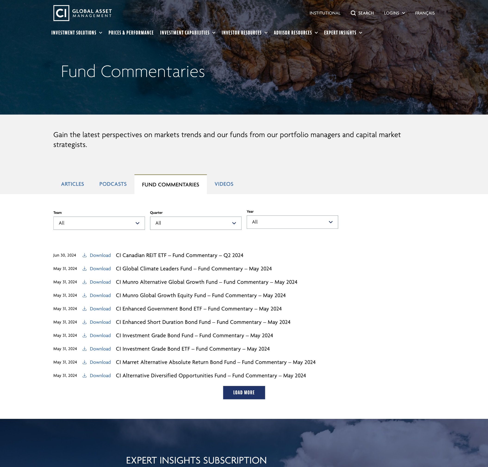
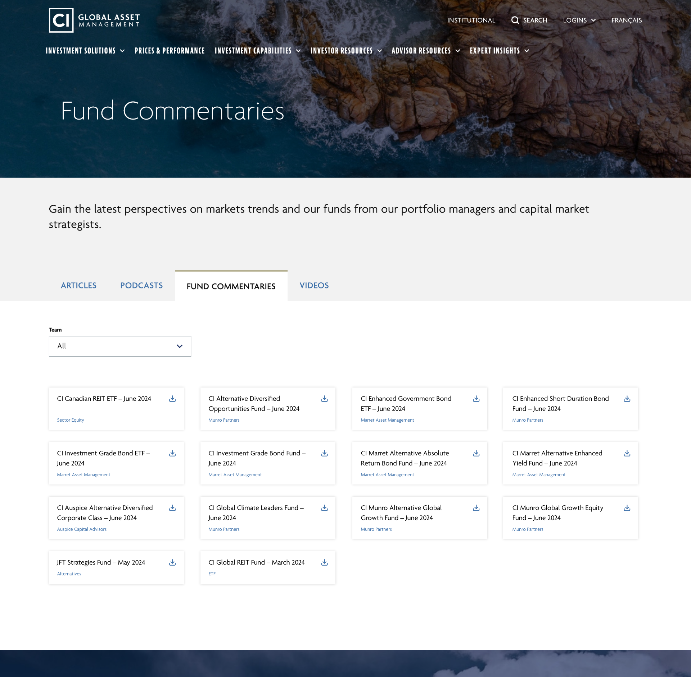
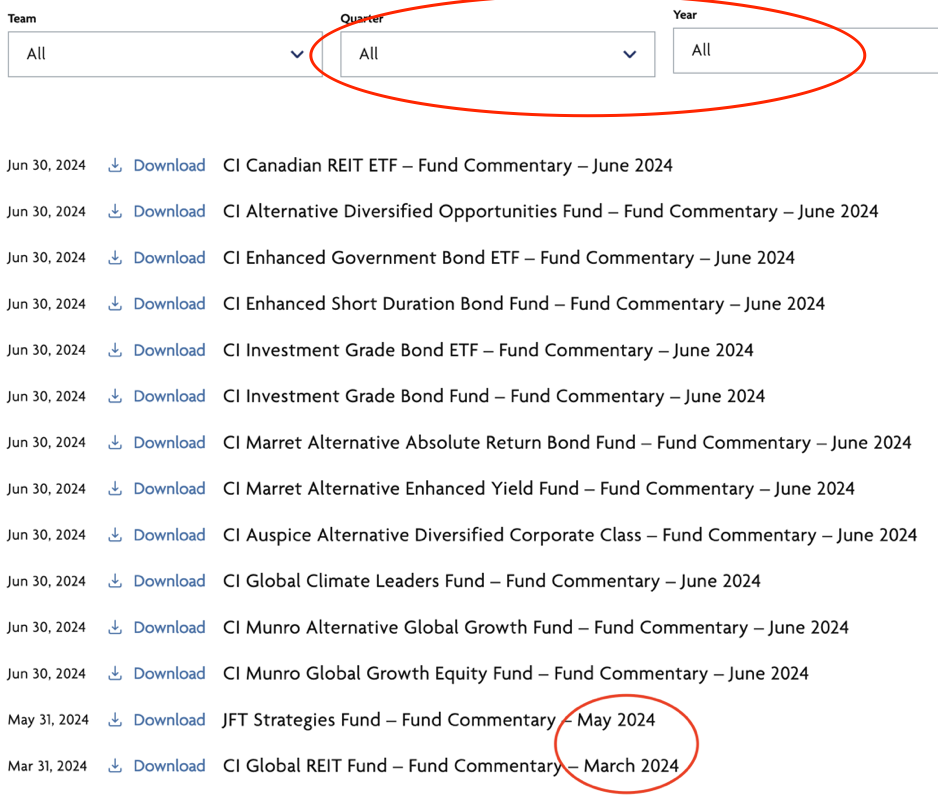
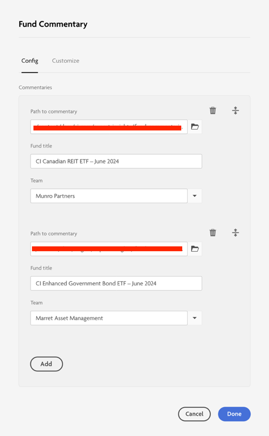
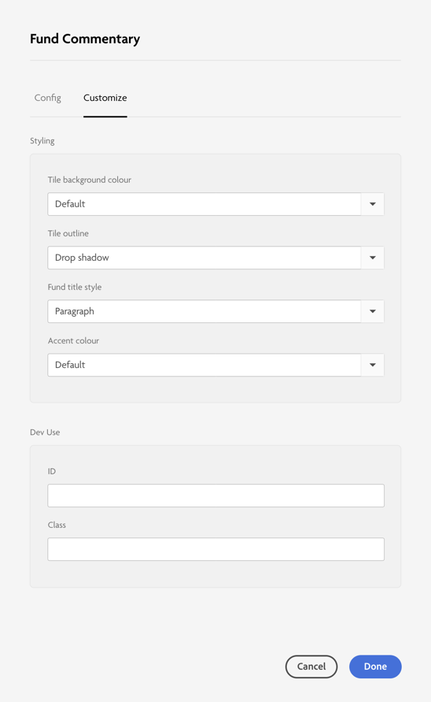
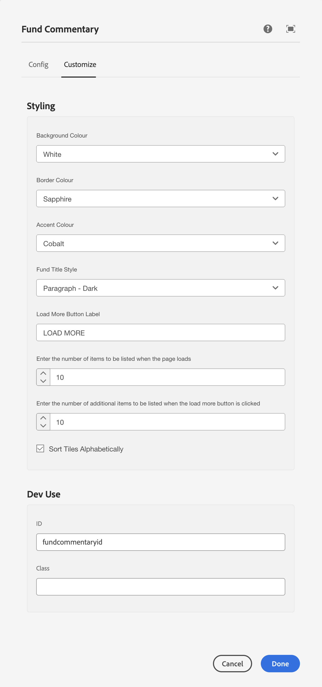
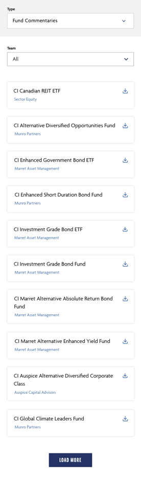
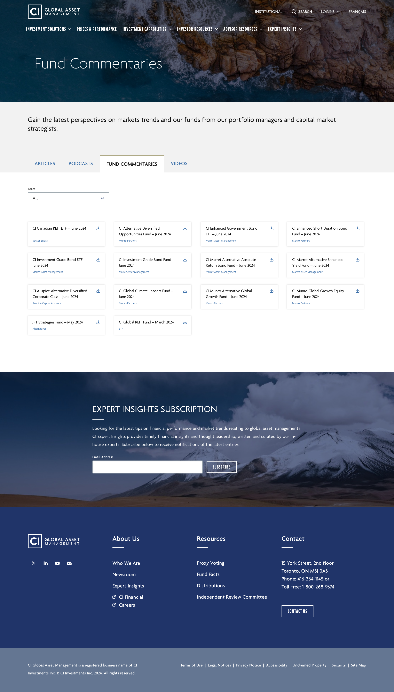

Picture this - a page whose design hasn’t been updated in years, despite being updated quite regularly. This isn’t a new thing. If you’re a web designer, graphic designer, or a UI designer of any kind you’ve probably noticed this phenomenon multiple times while simply browsing through the internet. Well, this design hadn’t been updated since 2020…
My task was to take into account who the page was utilized, how people used the page, and the best way to display the assets.
Tools/software used: Adobe XD, Adobe experience manager


No. 1: establish timeline. One main positive of this project was that it wasn’t a rushed request. I basically had all the time in the world :)
No. 2: research. I think this is always the most important part of my process. What’s trending - what’s not? From here, I was able to pull two ideas: tile and a modernized version of the list style that was already implemented. The research part also includes reading data (fun).
In short, clients visit this page to download pdfs. I made sure to keep that downloading aspect in the forefront.
No. 3: my most favourite part of the entire process - design. I found this project was streamlined enough to not need lo-fi mockups or user journeys. I drew up some high level mockups and went back and forth with reviews from the stakeholders. After some feedback, I was able to narrow it down to two designs. Colours stayed consistent, following the already existing brand guidelines.
Filters like “quarter” and “year” were removed based on lack of usefulness from the users and to reduce redundancy — the list is now compressed and no longer expanded. Therefore, certain filters were no longer necessary. This meant a cleaner look and easier style o navigation.
“Fund commentary” has also been removed from the commentary title since that’s also redundant, i.e. CI Canadian REIT ETF – Fund Commentary – June 2024

No. 4: being a team player. At this point, I worked along side the lead dev on the project. We discussed which version would most likely work best in the backend. We also took into account AEM’s (adobe experience manager) capabilities. In addition to the web page, I also designed the AEM component :)
While the page design accounted for the end user, the AEM component accounted for the content designers. The middle people who would input the data onto the page as intended. For this component I worked closely with the dev team and QA’d the component.
The component made the update process a lot more seamless and significantly cut down the time needed to update the page.




